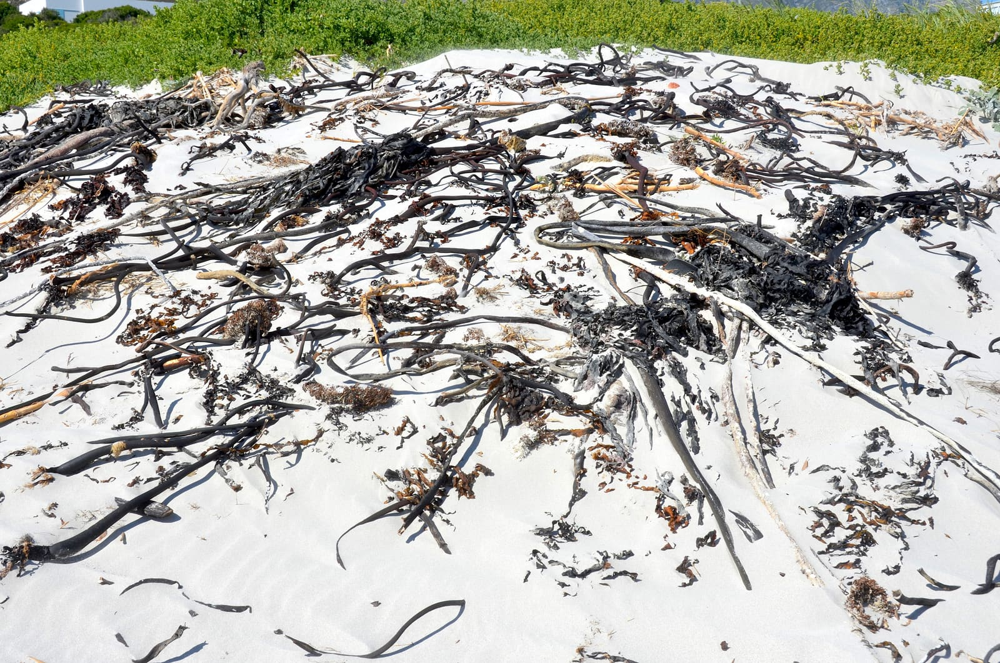

Sea moss · Label notes
How much iodine is in a capsule, and in a spoon.
Seaking prints 75 µg of iodine in every capsule and 150 µg in the two you take. The Northern Soul gel prints nothing at all. Here is what those numbers are measured against, why the jar has none, and the one ingredient that is on the capsule list and not the gel's.
By Reiss Davies Ausar4 September 20268 minute read

Somebody asked me across the counter last week how much iodine was in a spoonful of the gel. I told him I did not know, which is not the answer anyone wants from the person who made it. Then I handed him a tub of Seaking and showed him the back of it, because that one I can answer to the microgram.
This piece is about the difference between those two answers. It is the only measured mineral figure on anything I sell, so it is worth setting out properly: what the number is, what it is being compared against, why the jar next to it has no number at all, and what I am still not allowed to tell you once the number is printed.
01The figure on the tub
Seaking is 50 vegan capsules at 800 mg each. The serving is two capsules in the morning with at least 500 ml of water, which makes the tub a 25 day supply.
Each capsule carries 75 µg of iodine. Two capsules carry 150 µg. That is the whole of the figure and there is nothing hiding behind it.
A microgram is a millionth of a gram. One hundred and fifty of them is a quantity you could not see if I tipped it onto the counter, and iodine is one of the few things people buy in a shop like mine where a number that small is worth printing at all. There is a reference intake for it and there is a published upper limit, and the two are closer together than most people assume. I am not going to print the upper limit here, because the figure I see quoted moves depending on who published it, and you should have that one from your GP or from the NHS rather than from a man who sells seaweed.

02What 150 micrograms is measured against
A number on the back of a tub is only useful if you know what it is being held up against. In Great Britain that yardstick is the nutrient reference value, the NRV. It is one figure per nutrient, set for a general adult population, and it exists so that a label can be read by somebody standing in an aisle rather than by a nutritionist.
For iodine the NRV is 150 µg a day. So a serving of Seaking is 150 µg against an NRV of 150 µg, and one capsule is half of it. That is a tidy piece of arithmetic and it is the reason the figure is on the pack.
The listing also carries the figures for pregnancy and for breastfeeding, 220 µg and 290 µg a day. Those are higher, and they are still intakes rather than instructions. If you are pregnant or nursing, the person to ask about iodine is your midwife or your GP, and I would rather you did that before you bought anything from me.
The other thing worth saying is that a capsule does not arrive into an empty account. Milk, dairy and fish are the usual sources of iodine in a British diet, so whatever you take from me sits on top of whatever you already eat. That is exactly why I print the figure instead of leaving you to guess it.

03Why the jar has no figure
The Northern Soul gel is the same four algae as the capsules, soaked and blended with water, with nothing taken out and nothing dried off. It is a good product and it is the one I take myself. It carries no iodine figure, and it is not going to.
Seaweed takes up iodine from the water around it. How much ends up in the frond depends on the species, on the stretch of coast, on the season, on how long it sat before it was dried and on how it was stored afterwards. Two harvests off the same rocks in March and September are not the same material. A gel made in small runs above a shop on Smithdown Road would need a laboratory number for every batch before I could print anything, and that is not a cost a jar at £34.99 carries.
So the tub says 75 µg and the jar says nothing. Same seaweed, different honesty about what I actually know. The specification sheet for the gel says as much in the iodine row, and it will keep saying it until somebody hands me batch numbers I can stand behind.
Dried and milled and weighed, the same seaweed sits still enough to measure. In a jar it does not.

04The two products, side by side
People assume the capsule is the gel with the water taken out, and it very nearly is. Here is the whole difference, laid out.
| Declared list, gel | Chondrus crispus · Fucus vesiculosus · Laminariales · Chlorella. Prepared with water. |
|---|---|
| Declared list, capsules | The same four, plus Syzygium aromaticum, which is clove. Five names, no sixth. |
| Iodine printed | Gel: none, for the reason above. Capsules: 75 µg each, 150 µg in a serving. |
| Serving | Gel: one tablespoon each morning. Capsules: two each morning with at least 500 ml of water. |
| Storage | Gel: fridge, 28 days once opened, or freeze it. Capsules: closed, dry, no fridge. |
| Price | Gel: £34.99 for 300 ml, £50.00 for 500 ml. Capsules: £39.99 for 50, which is 25 mornings. |
Per day the two land in much the same place, £1.52 to £1.75 for the gel depending on the jar, £1.60 for the capsules. Nobody is paying extra for the convenience, whichever way round you expected that to go.

05The clove that is on one list and not the other
Syzygium aromaticum is clove: the dried, unopened flower bud of an evergreen tree in the myrtle family, grown in Indonesia, Madagascar, Zanzibar and Sri Lanka. It is the same spice that sits in your cupboard, and the same one that is on the nine-ingredient list for Decolonise.


It is declared on the Seaking list and it is not on the gel's. If you have held the two labels next to each other, the difference is not a printing error. Four algae in both, and a spice in one of them.
What I am not going to do is tell you why it is in there. A formulator's reason for putting a botanical in a blend is the exact thing that turns into a claim the moment it is written on a page, and I would rather keep the clove on the list than argue about a sentence. It is there, it is named in Latin, and you can smell it when you open the tub.
06The sentence I am leaving out
There is permitted wording about iodine on the Great Britain register, and a serving of Seaking would clear the threshold to use it, because the threshold is a proportion of the NRV and a serving here is all of it. I have printed it once before. I am leaving it out of this one.
The reason is straightforward. A permitted sentence is still a sentence about a nutrient and a body, and the moment one goes on a page the rest of the page starts leaning on it. Photographs get chosen to agree with it. Headings drift towards it. Then somebody adds a second sentence that was never permitted at all, and by that point nobody in the building can tell you which half of the page is legal.
What you get from me instead is the number and the yardstick. 150 µg in a serving. 150 µg is the NRV. If you want to know what iodine is for, the NHS page on it is free, better written than anything I would manage, and not trying to sell you a tub.

07The ceiling, and who should leave it alone
Two capsules a day is the ceiling printed on the pack, not an opening offer. I would rather lose a sale than have you work through a tub at four a day, so please read this list.
- Overactive thyroid. If you have hyperthyroidism, neither the capsules nor the gel are for you, because of the iodine.
- Thyroid medication of any kind. Ask your GP or pharmacist first. If they are content for you to take something, this is the one where the figure is known, which is usually the point of the conversation.
- Pregnant or nursing. Ask your midwife or GP. The reference intakes are different, 220 µg and 290 µg, and that is a conversation for a clinic rather than a counter.
- Anything else you take that carries iodine. Kelp tablets, some multivitamins, some seaweed snacks. The figures add up whether or not you were adding them.
- Both at once. If you take the capsules and the gel on the same morning, you are counting one and guessing the other, which defeats the reason for buying the counted one.
- Children. Not for them. Keep the tub out of reach.
A missed morning is a missed morning. Take two the next day, not four.
08Which one to buy
If you need to know the figure, the capsules. If you are at home most mornings and you would rather have the whole plant with the water still in it, the gel. The products are set out below.


Seaking
£39.99The counted one. 50 vegan capsules at 800 mg, 75 µg of iodine in each and 150 µg in a serving. 25 mornings to a tub.
See the specification
Northern Soul
from £34.99The same four algae, as a gel. One tablespoon each morning, 300 ml or 500 ml, in the fridge. No iodine figure, for the reason in section three.
Choose a size
Chondrus Crispus
£34.99The single-ingredient gel. The Atlantic plant, water and Omega DHA oil. One alga, no formula around it.
Add to bag
Purple Mwani
£24.99The warm-water species, sold as what it is. Eucheuma cottonii from Tanzania. Named and priced accordingly.
Add to bagIf you are counting iodine because somebody at a surgery asked you to, bring the letter into the shop on Smithdown Road and I will read the label with you. Tuesday to Sunday, 10 to 6.

Reiss Davies Ausar
Founder and formulator at Herbase. Trading online since 2019 and behind the counter at 599 Smithdown Road, Liverpool, since August 2024. Author of three books on herbal practice. Book an hour with him if you want to go into more detail.